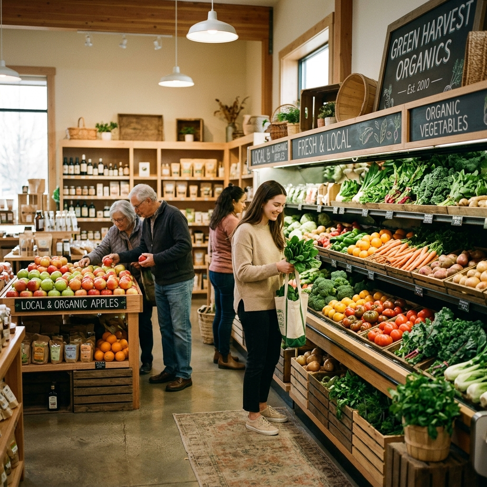

Our Story
Fifteen Years of Fresh, Local Service
FreshlyMarket started as a single neighborhood grocery store in 2011, built on one simple promise: stock what's actually fresh, price it fairly, and treat every customer like a neighbor. Today we've grown into a full online supermarket, but that promise hasn't changed.
Every department — from produce to household essentials — is curated by people who shop here too, who care about quality as much as you do.
